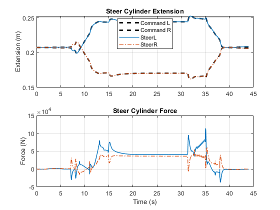

Motor Grader Drive and Steer Systems
This example focuses on the driving and steering systems of a motor grader. It models the articulation, lean, and steering systems of a motor grader and neglects the complexity of the lift assembly. It is suitable for exploring aspects of the powertrain and steering systems.
The actuation system can be driven using prescribed motion to determine the required actuator size. Ideal actuators can be used to begin the process of tuning controllers.
(return to Motor Grader Design with Simscape Overview)
Contents
- Model
- Front Axle Model
- Rear Frame Model
- Powertrain: Torque at Wheels
- Powertrain: Torque at Driveline
- Powertrain: Driveline
- Simulation Results: Grading Test, Open Loop
- Simulation Results: Magic Formula Tire, Grid, Closed Loop
- Simulation Results: Magic Formula Tire, Bank, Closed Loop
- Simulation Results: Point Cloud, Bank, Closed Loop
- Simulation Results: Magic Formula, Bank, Closed Loop, Driveline
- Simulation Results: Magic Formula, Bank, Closed Loop, CVT Abstract
- Simulation Results: Magic Formula, Bank, Closed Loop, CVT Electrical
- Simulation Results: Magic Formula, Bank, Closed Loop, CVT Hydrostatic
- Simulation Results: Magic Formula, Bank, Closed Loop, CVT Power Split
Model

Front Axle Model
The front frame controls the steering and lean angle of the front wheels. The steering actuators point the wheels along the path the front axle should follow. That combined with the articulation angle controls the path of the vehicle. The lean cylinders control the angle the wheels lean towards or away from the frame. This permits the wheels to provide better traction and resist the forces from the load on the blade that will drag the grader off course. Lean also helps the grader stay on the desired path when the grader is driving along a steep slope. The pivot permits the axle to rotate about its longitudinal axis, keeping both wheels on the ground when on uneven terrain.
The R and L ports permit the wheels to connect to the powertrain in the event the design has powered front wheels.
Rear Frame Model
The rear frame models the inertia for the drive unit for the rear wheels, including the power source for the powertrain. The connection between the wheels and the powertrain are the 1D mechanical ports FL, FR, RL, and RR. The mechanical connection between the wheels, including the components such as differentials, is handled within the powertrain subsystem.
Powertrain: Torque at Wheels
The model below shows ideal torque sources that apply torque to each wheel. This abstract model does not attempt to capture powertrain behavior, it is a very simple model that simply acts to get the vehicle to travel at the target speed. Minimizing computation in the powertrain system lets the model run faster.
Powertrain: Torque at Driveline
The model below shows an ideal torque source that applies torque to the input shaft of the mechanical driveline. This abstract model assumes the engine and CVT perform as required and lets the investigation focus on the driveline and on the tire-ground interaction.
Powertrain: Driveline
The model below represents the mechanical connection between the output of the transmission and the four driven wheels. Differentials at the front and rear enable the engine to power both wheels and for those wheels to turn at different rates when the vehicle is in a turn. Compliance elements abstractly model shaft deflection in the driveline.
Simulation Results: Grading Test, Open Loop
The grading test is run with torque applied at the wheels. The operator commands for steering are applied open loop, meaning there is no feedback for steering based on the vehicle position or orientation.
Position Actuation
In the first set of plots, prescribed motion is used for all actuation systems. The required force to reach these positions is calculated by the simulation.


Shaft Actuation
The same test is run again, this time applying force and torque at the actuators. This closed-loop actuation with abstract actuators enables us to start the process of tuning the controllers and identifying requirements for bandwidth and sensor accuracy.
Simulation Results: Magic Formula Tire, Grid, Closed Loop
The grading test is run with torque applied at the wheels. The operator commands are applied closed loop, where a driver adjusts commands to the front axle steering to follow a specific path.
Position Actuation
Prescribed motion is used for all actuation systems. The required force to reach these positions is calculated by the simulation.
Simulation Results: Magic Formula Tire, Bank, Closed Loop
The grading test is run with torque applied at the wheels. The operator commands are applied closed loop, where a driver adjusts commands to the front axle steering to follow a specific path. The path followed on the test surface forces several of the wheels to climb a bank, which affects the steering commands.
Position Actuation
Prescribed motion is used for all actuation systems. The required force to reach these positions is calculated by the simulation.
Simulation Results: Point Cloud, Bank, Closed Loop
The grading test is run with torque applied at the wheels. The operator commands are applied closed loop, where a driver adjusts commands to the front axle steering to follow a specific path. The path followed on the test surface forces several of the wheels to climb a bank, which affects the steering commands. The tire model uses a point cloud to describe the geometry of the tire.
Position Actuation
Prescribed motion is used for all actuation systems. The required force to reach these positions is calculated by the simulation.

Simulation Results: Magic Formula, Bank, Closed Loop, Driveline
The grading test is run with torque applied at the input shaft of the mechanical driveline that connects the four driven wheels. The operator commands are applied closed loop, where a driver adjusts commands to the front axle steering to follow a specific path. The path followed on the test surface forces several of the wheels to climb a bank, which affects the steering commands.
Position Actuation
Prescribed motion is used for all actuation systems. The required force to reach these positions is calculated by the simulation.
Simulation Results: Magic Formula, Bank, Closed Loop, CVT Abstract
The grading test is run with an engine model and an abstract CVT connected to a mechanical driveline that connects the four driven wheels. The operator commands are applied closed loop, where a driver adjusts commands to the front axle steering to follow a specific path. The path followed on the test surface forces several of the wheels to climb a bank, which affects the steering commands.
Position Actuation
Prescribed motion is used for all actuation systems. The required force to reach these positions is calculated by the simulation.
Simulation Results: Magic Formula, Bank, Closed Loop, CVT Electrical
The grading test is run with an engine model and an electrical CVT connected to a mechanical driveline that connects the four driven wheels. The operator commands are applied closed loop, where a driver adjusts commands to the front axle steering to follow a specific path. The path followed on the test surface forces several of the wheels to climb a bank, which affects the steering commands.
Position Actuation
Prescribed motion is used for all actuation systems. The required force to reach these positions is calculated by the simulation.
Simulation Results: Magic Formula, Bank, Closed Loop, CVT Hydrostatic
The grading test is run with an engine model and a hydrostatic CVT connected to a mechanical driveline that connects the four driven wheels. The operator commands are applied closed loop, where a driver adjusts commands to the front axle steering to follow a specific path. The path followed on the test surface forces several of the wheels to climb a bank, which affects the steering commands.
Position Actuation
Prescribed motion is used for all actuation systems. The required force to reach these positions is calculated by the simulation.

Simulation Results: Magic Formula, Bank, Closed Loop, CVT Power Split
The grading test is run with an engine model and a power split hydromechanical CVT connected to a mechanical driveline that connects the four driven wheels. The operator commands are applied closed loop, where a driver adjusts commands to the front axle steering to follow a specific path. The path followed on the test surface forces several of the wheels to climb a bank, which affects the steering commands.
Position Actuation
Prescribed motion is used for all actuation systems. The required force to reach these positions is calculated by the simulation.